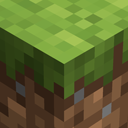

Добрый вечер, Player.
Продолжите свою сборку или начните новую. Всё нужное уже на своём месте.
Создайте первую
сборку
Выберите версию Minecraft и загрузчик: Vanilla, Fabric, NeoForge или Forge. Veyra подготовит отдельную папку и подходящую Java.

VanillaMinecraft ИЗБРАННОЕМоя сборка
Отдельная папка игры готова к вашей сборке.
Проверяем Java и файлы…
Мои сборки
Сборки.
Каждая сборка живёт в собственной папке с модами, мирами и настройками.
Сервер.
Свой мир для друзей: та же версия и моды, отдельная папка и сохранения.
Создайте сборку — сервер возьмёт её версию Minecraft, загрузчик и подходящие моды.
A Minecraft Server
127.0.0.1:25565Консоль сервера
Здесь появится вывод сервера.
Достижения.
История ваших миров: время в игре, запуски и открытые достижения.
Player
История начинается сегодня
Время по сборкам
Где прошло больше всего часов
Доска достижений
Наведите на рамку, чтобы узнать условие
Журнал.
Здесь видны этапы установки, запуска и ошибки.
Загружаем журнал…
Настройки.
Общие параметры. Для отдельной сборки можно задать свои Java и память.
Игрок
Локальный профиль
Память
Значение по умолчанию для новых сборок
Java без хлопот
Veyra подберёт нужную версию для каждой сборки
При необходимости лаунчер скачает официальную Java для выбранной версии Minecraft.
Дополнительно
Версии, папки и интерфейс
Атмосфера
Свет, глубина и прозрачность — под ваше настроение
Обновления
Версия лаунчера
Проверка ещё не выполнялась.
Discord
Покажите друзьям, во что играете
Ожидаем Discord